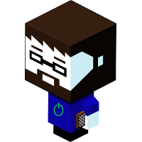
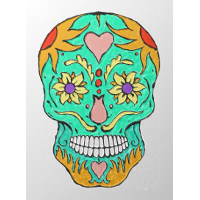
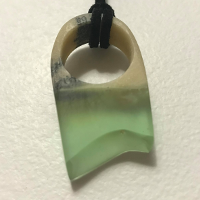
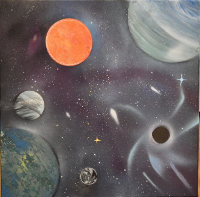
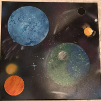

I recieved a drawing tablet and so wanted to learn how to use it. I found a blank day of the dead skull and just coloured it in.

I wanted to make a ring that seemed like a slice of the ocean. From that design idea I knew that for the water part it would need to be resin. I wanted to have a sandy looking base so I made mycarta from an old book and cut it roughly to shape before casting the top in a custom moulde I made.

Back in 2016 I took a art course so that I could learn more of the fundamentals of art. This was my favorite piece that I made during the class. It really helped me understand how contours make shapes

I had seen a couple of really interesting spray paint galaxy art so I challenged myself to make one and this is the first one I made. Tons of fun to do and I am looking to do alot more in the future.
